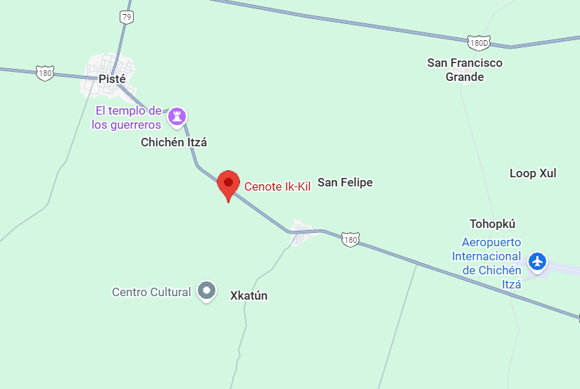

Es uno de los cenotes más famosos de Yucatán, ubicado cerca de Chichén Itzá. Es un cenote abierto de paredes profundas cubiertas de vegetación y raíces colgantes que crean un ambiente natural impresionante. Sus aguas de tono azul oscuro alcanzan gran profundidad, lo que lo convierte en un sitio ideal para nadar. Ik Kil refleja la belleza sagrada de los cenotes mayas, que fueron importantes fuentes de agua y espacios ceremoniales. Hoy es un destino turístico muy visitado por su majestuosidad y su cercanía con las antiguas ciudades mayas.
Ubicación |
Información Esencial
|